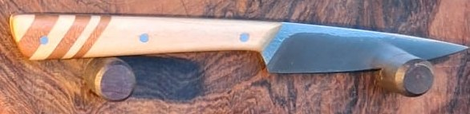
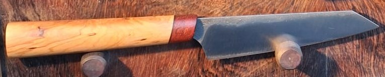
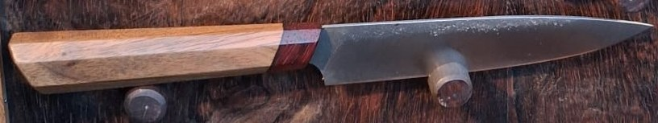
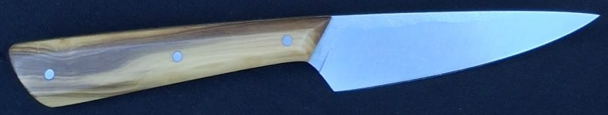

Accueil › Les couteaux
Les couteaux
Toutes les pièces sont uniques. Lorsqu'un couteau est vendu, il reste visible quelques jours pour vous donner une idée de ce que je fabrique : je peux en réaliser un semblable sur commande.

Le Cévenol
Buis et noyer · lame 14 cm
180 €

Petit couteau de chef
Noyer et buis · lame 12 cm
150 €

Couteau de chef
Chêne des tourbières · lame 20 cm
240 €

L'Érable
Érable et padouk · lame 13 cm
160 €

Petit santoku
Chêne des tourbières, olivier · lame 13 cm
170 €

Petit kiritsuke
Merisier et padouk · lame 12 cm
Vendu

Couteau d'office
Noyer et padouk · lame 11 cm
120 €

Couteau d'office
Buis et noyer · lame 10 cm
100 €

Couteau d'office
Frêne et padouk · lame 9 cm
90 €

Couteau de table
Olivier · lame 11 cm
90 €
Vous ne trouvez pas votre bonheur ?
Je fabrique aussi sur mesure : choix du bois, de la taille de lame, gravure. Comptez 4 à 6 semaines.
Demander un couteau sur mesure